HOBBIES
MY JOURNEY WITH TECHNOLOGY
WHY I WANT TO JOIN FAC
PLAY


The earliest I can remember of me being fascinated by technology was a tetris game that I played on a hand held console(looked like a rip-off gameboy) when I was around 3 or 4 years old, I don't even know how I remember that probably beacuse of the curiosity it created of how are these blocks appearing out of thin air and dissapear moments later, or how I couldn't touch them and only move them through the buttons. This fascination only grew over time as technology developed throughout the years and allowed us to carry out more complex tasks.
Fast track to 2015-16 I took computer science as one of my GCSE's and made a computer output "Hello World" in python, I'm not going to say that's when I fell in love with coding from then on out, it was actually when we were given projects for the final year of GCSE's, I was pretty nervous about this since I thought coding was too difficult but during my summer holidays I tried to learn the basics of python from an app called solo learn. I would learn whenever I was travelling or when I was free at home, I thorougly enjoyed it and when the time came to making the project it just made realise how fun coding can be, even if it was challenging I learned new things and the best part was the ecstatic feeling of solving problems even if it took hours or sometimes days!
The last project I was assigned was in A level's where I decided to make a fighting game with unity and C#, this was one of the most challenging tasks ever but will always be one of the most fun I've ever had coding. It wasn't just coding, I also learnt how to use unity, making animations with sprites, and testing it with my friends(yeah we played in the classroom for educational purposes). We also would look at each other's projects and help each other out, this showed me the diverseity of coding entails and not just some logic on your screen. So my overall opinion of coding is that it's cool and and you can use it in cool different ways to help and make an impact in society and I persoanlly feel becoming a web developer will help me be a part of that impact(a positive one, just to be clear).
After finishing A'levels a few months early due to the covid outbreak in 2020, I had already taken a gap year to think about what I want to do for my future, I didn't want to take out a loan due to personal reasons, unless worst comes to worst. I tried to work and save some money but that lasted for 3 months due to the 3rd covid outbreak.
So I tried to search for apprenticeships instead on the internet that's when I found Founder And Coders, It seemed so different to any other apprenticeship I've come across, one of the main differences is creating a platform for people to interact and learn. Another is also the fact that FAC also guides their members on their journey to becoming a web developer through the numerous channels on discord, posting daily challenges and holding weekly meetups.
As a muslim with Indian origin I really respect the core values of FAC trying to help the underprivileged and creating a environment that is diverse and inlclusive, since this is also inline with my religion/personal view of treating everyone the same and giving equal opportunties. That's why I would like to be apart of this commnunity, continue to grow and help others that are marginilised and struggling to get into this field.